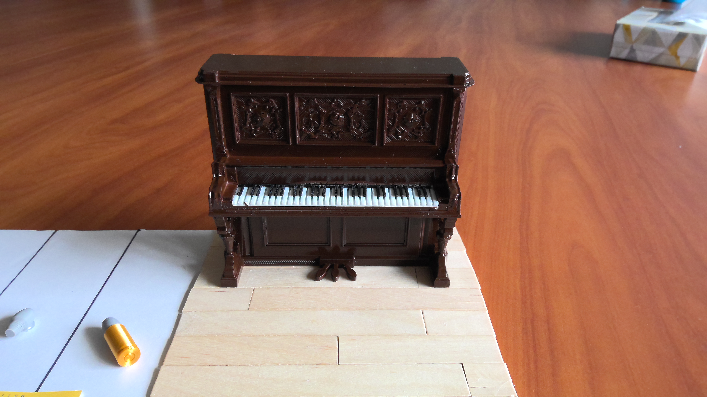

August Wilson — Diorama Interpretation

We are using the piano from The Piano Lesson as a representation of how the past can haunt the present and future. The piano is a literal representation of this, as it is an object that is haunted by the spirits of the past. However, it also serves as a metaphor for how the past can continue to affect us even if we try to move on from it. The piano is a reminder that the past is always with us, and that we cannot escape it.
The piano carries with it the trauma and history of the family. By doing so, it is an object that links the past to the present. Specifically, we see characters like Boy Willie and Berniece recognize the sacrifices their ancestors went through to acquire and maintain the piano.
The carvings on the piano are an allusion to the actual carvings on the piano in the play. Unlike the play, these carvings do not depict mask-like figures, but we are symbolically using them to represent the history and legacy of the family.
We intentionally put hardwood flooring underneath the piano to represent the strong community that upholds the legacy of the piano. Berniece, for instance, spends the entire play fighting to keep the piano, and chooses the continue the piano's legacy through Maretha. In the end, Boy Willie also chooses to keep the piano, which is a testament to how the piano's legacy has become a part of him as well. The floor is meant to represent the foundation of the piano's legacy, which is upheld by the community and family that surrounds it.